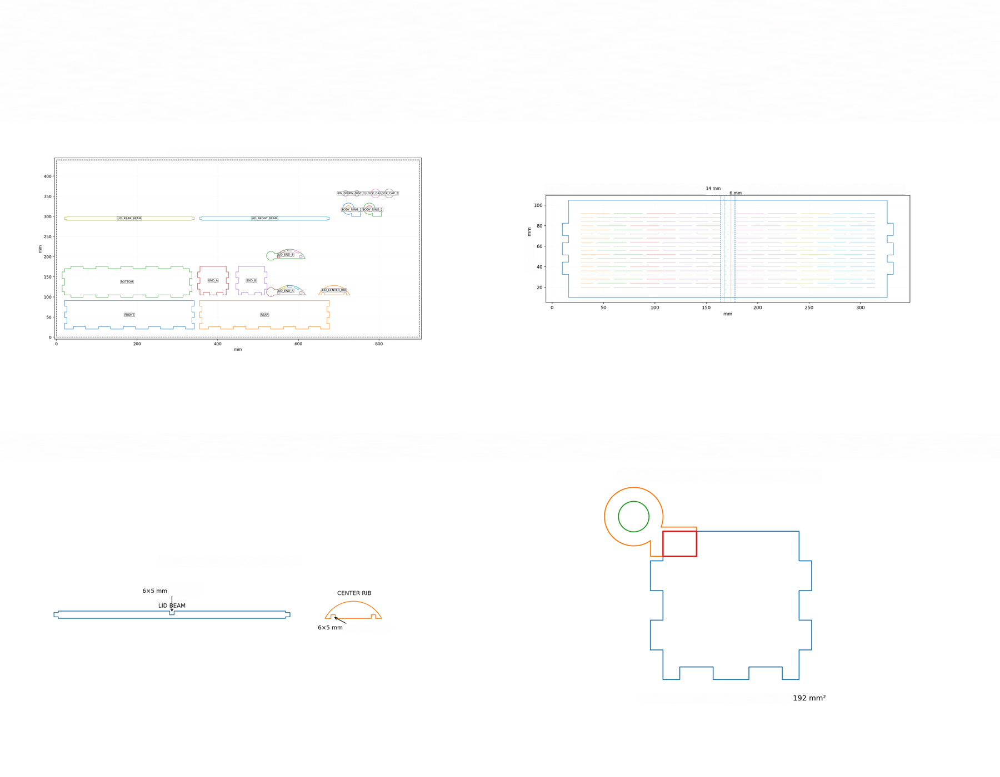
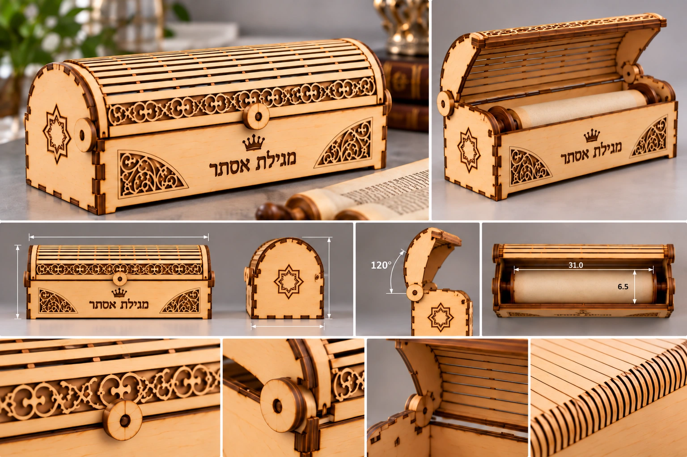
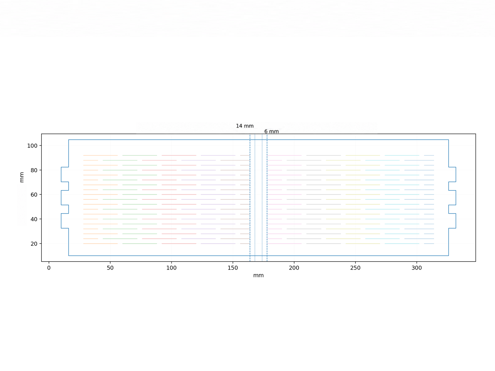
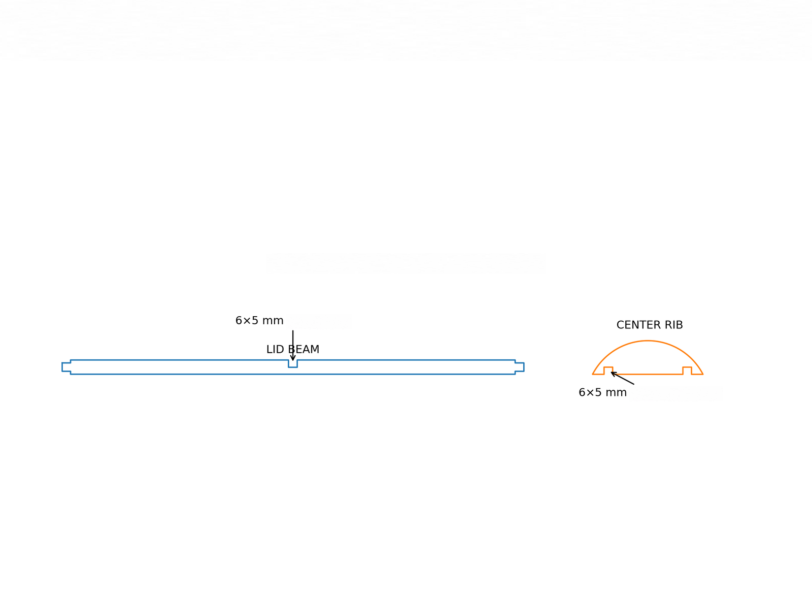
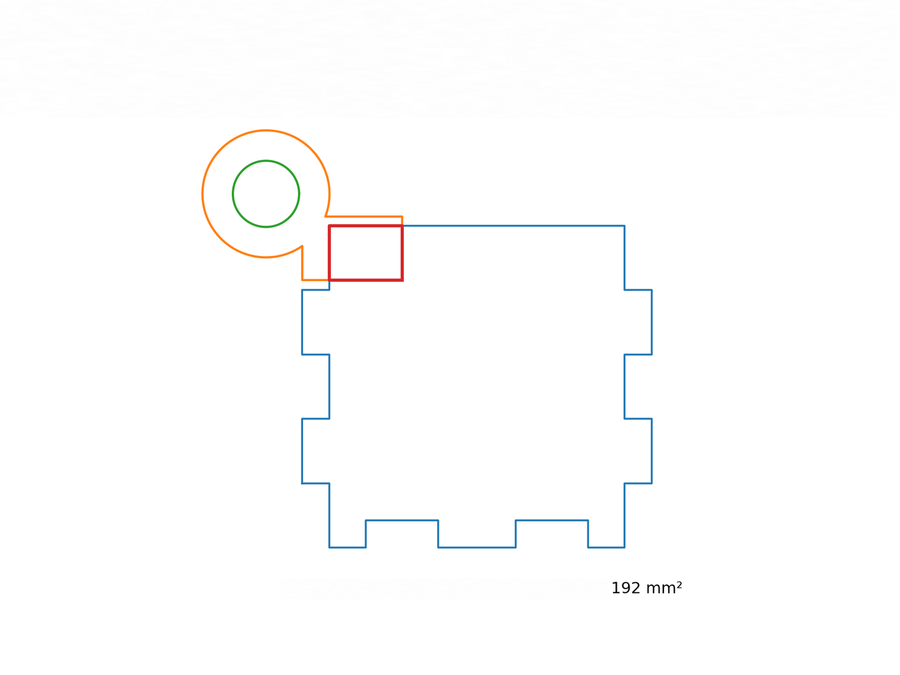

02 / הנדסה ותכנון
מהעיצוב לתכנון
גליון התכנון מרכז את פריסת חלקי הקופסה, מעטפת המכסה ופרטי החיבור של גרסה V8.2.2, לקראת החיתוך והבנייה.

פריסת חלקי הגוף, מעטפת המכסה המחורצת, חיבור הצלע המרכזית ופרט ציר העץ מופיעים יחד בגליון התכנון.
אובייקט 08 / מסורת
ההדמיה מציגה את העיצוב המוצע; שרטוטי התכנון הם של גרסה V8.2.2. המידות מציינות את החלל הפנימי בתכנון. תמונות הבנייה והמוצר המוגמר יתווספו בהמשך.

מבט סגור ופתוח, מבטי חזית וצד ותקריבים של המכסה, הסוגר והצירים. החריטה שעל הקופסה היא חלק מעיצוב המוצר; מידות החלל הפנימי בתכנון הן 310 × 65 × 65 mm.
קופסת עץ מעוטרת למגילת אסתר, עם מכסה קמור ומערכת חיבורים מתוכננת. ההדמיה מציגה את העיצוב המוצע במצב פתוח וסגור, לצד שרטוטי התכנון ופרטי החיבור לקראת הבנייה.
תהליך הבנייה / חיבורים
לצד פריסת החלקים, שלושה פרטים מציגים את רעיון המבנה: מעטפת מחורצת שמאפשרת כיפוף, צלע מרכזית במכסה ומערכת ציר מעץ המחברת בין המכסה לגוף הקופסה.
02 / הנדסה ותכנון
גליון התכנון מרכז את פריסת חלקי הקופסה, מעטפת המכסה ופרטי החיבור של גרסה V8.2.2, לקראת החיתוך והבנייה.

פריסת חלקי הגוף, מעטפת המכסה המחורצת, חיבור הצלע המרכזית ופרט ציר העץ מופיעים יחד בגליון התכנון.
03 / כיפוף בחריצים
מעטפת המכסה מתוכננת מדיקט בעובי 4 mm. רצף חריצים מאפשר את צורת המכסה הקמורה, לצד שוליים מלאים ורצועה מרכזית ללא חריצים באזור הצלע.

מעטפת המכסה עשויה דיקט בעובי 4 mm. החריצים מסודרים לצד שוליים של 12 mm ורצועה מרכזית מלאה של 14 mm.
04 / צלע מרכזית
צלע קמורה משתלבת עם קורות המכסה באמצעות חריצים משלימים. השרטוט מציג בנפרד את הקורה ואת הצלע, ואת נקודות המפגש ביניהן.

חריצים משלימים בקורה ובצלע יוצרים חיבור חצי־עץ במרכז המכסה; מידות החריצים מסומנות בשרטוט.
05 / ציר עץ
טבעת הציר משתלבת באזור דופן הקופסה. קווי המתאר והסימון האדום מציגים את אזור המפגש המתוכנן בין חלקי הציר והגוף.

המסגרת האדומה מסמנת את אזור המפגש בין טבעת הציר לדופן. בשרטוט מצוין שטח מגע של 192 mm².
התאמת מידות
רוצים לבדוק התאמה למגילה שלכם? אפשר לפנות עם מידות המגילה ולדון בהתאמת החלל הפנימי והמבנה במסגרת התכנון.